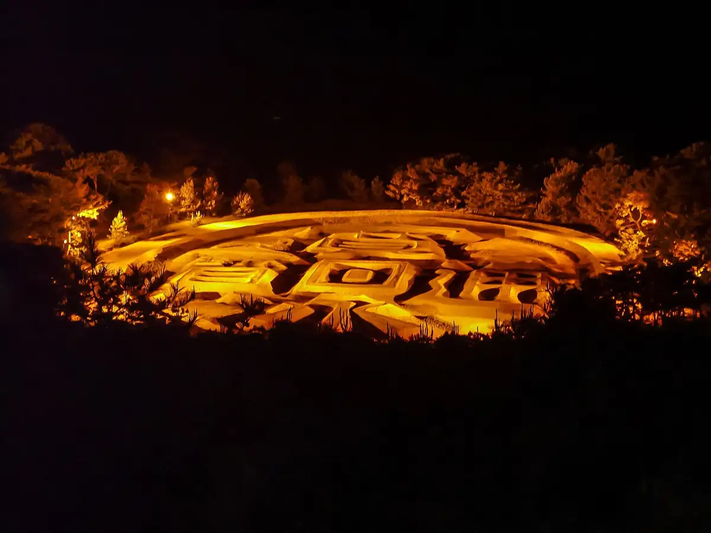
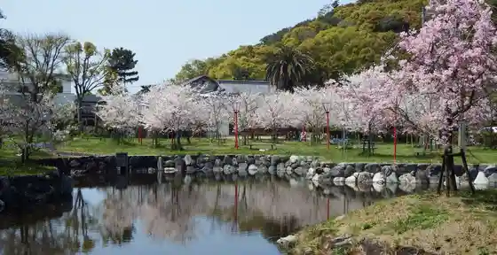
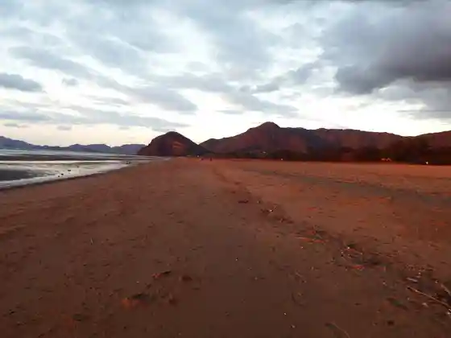
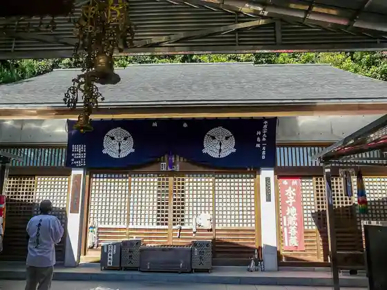
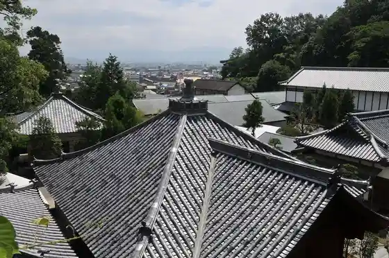

Kanonji
Kanonji · Kagawa
Kanonji
Highlighted on the Kagawa map.

Stay
Guranpuremia Setochi Shikoku Kagawa no Resort Guranpingu & Vira
Sumairu Hotel Kanonji (Kyu : Hotel Shietowa Kanonji)
Haipain Kanonji Ekimae
Famiriirojji Hatago Ya Sanuki Kanonji Mise
Hotel Saniiin
Hotel Rutoin Kanonji
Ribumakkusu Resort Kanonji
Tenku villa
Kanonji Gu Land Hotel
ARIAKE palm tree house (Haku Rutto)
HOTEL AZ Kagawa Kanonji Mise
Hotel O. Setouchi Hotel Osetochi by Kon Dan Kairo
Tabist Hon Dai Bijinesu Hotel Kanonji
Tabist Kon Dan So
Dining
Kama Ki ri
Seitan Teuchi Jogo Udon
Teuchi Chiudon Tsuruya
Kanakuma Mochi
Sanuki Men Tokoro Yamaoka
Okita
Homba Kanakuma Mochi Fukuda
IZAKAYA Tokidoki Kanonji Mise
Ibuki Iriko Center
Umaji Ie Toyohama Mise
Men Bo
Nakamaru Suisan
Yanagawa Main Shop
Hone Tsuki Tori Aji Tsuru
Onsen
Guranpuremia Setochi Shikoku Kagawa no Resort Guranpingu & Vira Public Bath
Hotel Rutoin Kanonji Public Bath
Ribumakkusu Resort Kanonji Public Bath
Hotel O. Setouchi Hotel Osetochi by Kon Dan Kairo Public Bath
Experience
Roadside Station Kotohiki
Sights
Zenigata Sae
Kon Dan Park

Ariake Hama

Shinkei In

Kanonji

Takaya Shrine
Honen Ike Entei